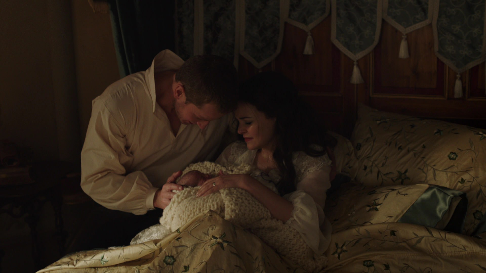
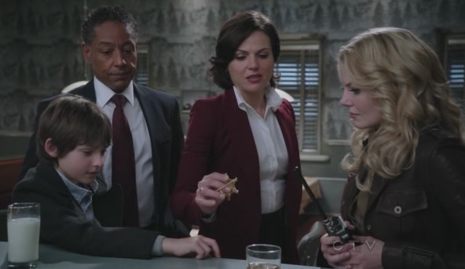

Biographie

Emma est la fille de Blanche-Neige et du Prince Charmant. Elle a été placée dans une armoire magique pour être sauvée de la Malédiction lancée par la Reine Regina. A l'origine sous la protection de Pinocchio, ce dernier l'abandonne à l'orphelinat, et Emma grandit seule dans des familles d'accueil.
Devenue Emma Swan, elle devient garante de cautions judiciaires et est retrouvée le soir de ses 28 ans par son fils Henry, qu'elle a abandonné à la naissance dix ans auparavant. Acceptant d'abord de le raccompagner à Storybrooke pour le ramener à sa mère adoptive, Regina Mills, elle refuse de le croire lorsqu'il lui annonce que tous les habitants de la petite ville sortent tout droit d'un livre de contes. Cependant, elle réalise très vite que certains évènements paraissent troublants et débute une rivalité avec Regina, qui s'avère être le maire de la ville. Voulant s'assurer de la sécurité d'Henry, Emma prolonge son séjour et réussit à s'intégrer, notamment en devenant adjointe au shérif. Elle remplace par la suite le Shérif Graham et s'installe dans l'appartement de Mary Margaret Blanchard afin de veiller sur son fils pour une durée indéterminée.
Par la suite, de nombreux habitants tentent de lui prouver la vérité : Jefferson assure qu'il existe d'autres mondes et tente de la forcer à fabriquer un chapeau magique, tandis qu'August Booth, un mystérieux étranger, prétend être l'enfant qui l'a retrouvée au bord de la route lorsqu'elle était bébé. Néanmoins, Emma refuse de voir la vérité en face. Elle décide alors de quitter la ville avec Henry mais revient sur sa décision et préfère partir seule. Regina tente alors de se débarrasser d'elle grâce à un chausson aux pommes empoisonné mais c'est Henry qui le croque, le plongeant dans un profond sommeil. Par conséquent, Emma admet enfin l'existence du Royaume enchanté et s'allie à Regina pour tenter de sauver son fils. Elle parviendra à lever la Malédiction en l'embrassant, le réveillant par la même occasion.
En savoir plus sur le biographie d'Emma Swan